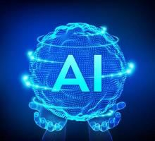

Technology's Used
Machine learning (ML) is a branch of artificial intelligence (AI) focused on enabling computers and machines to imitate the way that humans learMachine learning (ML) is a branch of artificial intelligence (AI) focused on enabling computers and machines to imitate the way that humans learn, to perform tasks autonomously, and to improve their performance and accuracy through experience and exposure to more data.n, to perform tasks autonomously, and to improve their performance and accuracy through experience and exposure to more data.
Artificial intelligence is a field of science concerned with building computers and machines that can reason, learn, and act in such a way that would normally require human intelligence or that involves data whose scale exceeds what humans can analyze.

Oracle is a fully configurable and scalable solution that stores data as objects while maintaining relationships between them. The current stable version of the Oracle database is 19c, where c denotes cloud compatibility.ibility.